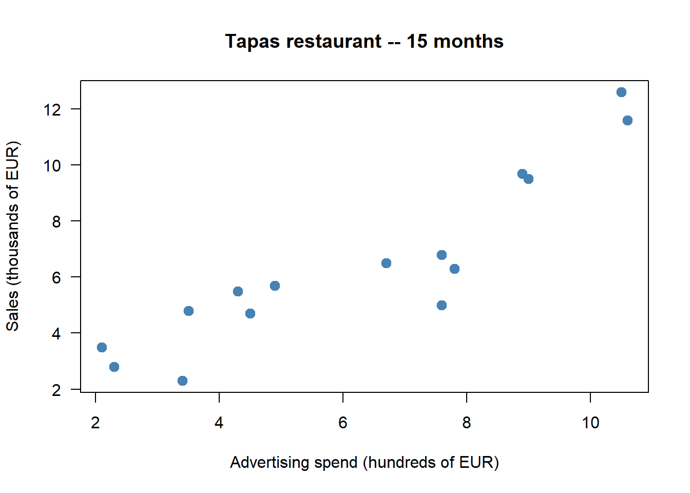
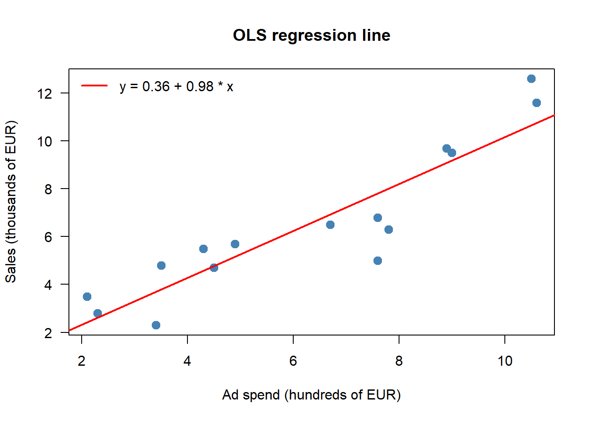
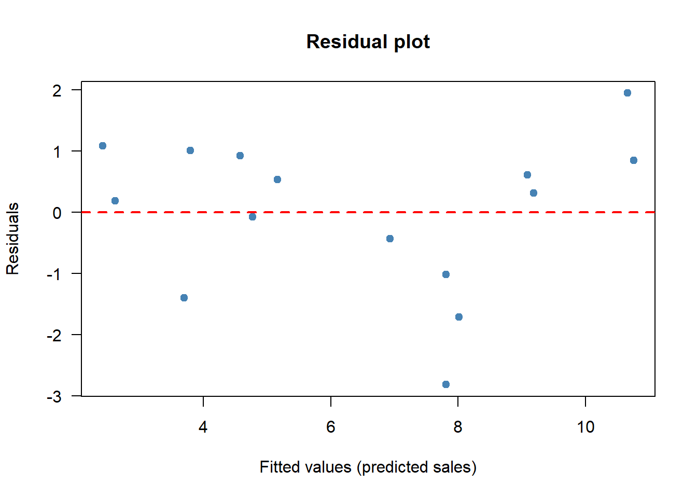
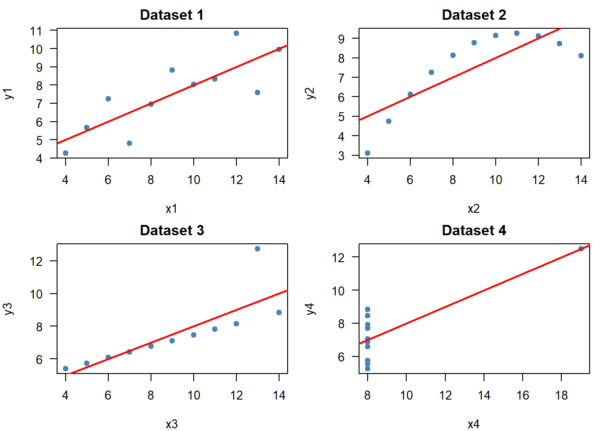

Code
library(dplyr)Status: ported 2026-05-19. Reviewed by editor: pending.
By the end of this chapter the reader should be able to:
cov(), cor(), lm(), and summary().Does spending more on advertising actually go hand in hand with higher sales — and how strongly?
A Granada tapas restaurant has 15 months of paired data on advertising spend and revenue. Looking at the two columns side by side does not answer the question: we need tools that summarise the joint behaviour of two variables. This chapter builds those tools — contingency tables, scatter plots, covariance, correlation, and the descriptive OLS line — and applies them to the restaurant dataset in Section 2.7. Every method here is purely descriptive: it summarises the sample. Whether a relationship is causal or transferable to the population is a separate question and the subject of later courses (Wooldridge 2020).
In Chapter 1 we described a single variable: its frequency distribution, centre, spread, and shape. In economics, however, the interesting questions are almost always about how variables move together. Does education affect income? Does advertising spending track sales? Does GDP growth coincide with falling unemployment?
To answer such questions we need bivariate descriptive statistics: tools that summarise the joint behaviour of two variables observed on the same set of individuals.
Throughout this chapter we consider two statistical variables, \(X\) and \(Y\), observed on a sample of \(n\) individuals. Each individual \(i\) contributes a pair \((x_i, y_i)\), so the data take the form
\[ (x_1, y_1),\; (x_2, y_2),\; \ldots,\; (x_n, y_n). \]
The order inside each pair matters: \((x_i, y_i)\) means both values come from the same individual \(i\). Re-sorting the \(x\)-column independently of the \(y\)-column destroys the bivariate information and turns the dataset into two unrelated univariate samples.
A small bivariate dataset to keep in mind: a labour economist surveys \(n=8\) recent graduates and records years of post-secondary education \(X\) and monthly starting salary \(Y\) (in euros):
| \(i\) | 1 | 2 | 3 | 4 | 5 | 6 | 7 | 8 |
|---|---|---|---|---|---|---|---|---|
| \(x_i\) (yrs) | 3 | 4 | 4 | 5 | 5 | 5 | 6 | 6 |
| \(y_i\) (EUR) | 1200 | 1400 | 1350 | 1600 | 1500 | 1550 | 1800 | 1900 |
The pair \((x_3, y_3) = (4, 1350)\) tells us that the third graduate studied for 4 years and earns 1350 EUR per month.
When \(X\) and \(Y\) take only a moderate number of distinct values (categorical variables, or quantitative variables that have been grouped), the bivariate data fit neatly into a contingency table, also called a two-way frequency table.
Let \(X\) take values \(x_1, \ldots, x_k\) and \(Y\) take values \(y_1, \ldots, y_p\).
By construction, \(\sum_i n_{i\cdot} = \sum_j n_{\cdot j} = n\) and \(\sum_i f_{i\cdot} = \sum_j f_{\cdot j} = 1\).
The general contingency table looks like
| \(y_1\) | \(y_2\) | \(\cdots\) | \(y_p\) | \(n_{i\cdot}\) | |
|---|---|---|---|---|---|
| \(x_1\) | \(n_{11}\) | \(n_{12}\) | \(\cdots\) | \(n_{1p}\) | \(n_{1\cdot}\) |
| \(x_2\) | \(n_{21}\) | \(n_{22}\) | \(\cdots\) | \(n_{2p}\) | \(n_{2\cdot}\) |
| \(\vdots\) | \(\vdots\) | \(\vdots\) | \(\ddots\) | \(\vdots\) | \(\vdots\) |
| \(x_k\) | \(n_{k1}\) | \(n_{k2}\) | \(\cdots\) | \(n_{kp}\) | \(n_{k\cdot}\) |
| \(n_{\cdot j}\) | \(n_{\cdot 1}\) | \(n_{\cdot 2}\) | \(\cdots\) | \(n_{\cdot p}\) | \(n\) |
The right-most column collects the row marginals, the bottom row collects the column marginals, and the bottom-right cell holds the total sample size.
A university surveys \(n = 200\) students about their faculty (\(X\)) and their preferred study mode (\(Y\): in-person IP, hybrid H, online O):
| IP | H | O | \(n_{i\cdot}\) | |
|---|---|---|---|---|
| Economics | 40 | 25 | 15 | 80 |
| Law | 30 | 20 | 10 | 60 |
| Sciences | 20 | 25 | 15 | 60 |
| \(n_{\cdot j}\) | 90 | 70 | 40 | 200 |
The cell \(n_{11} = 40\) says 40 Economics students prefer in-person mode. The row marginal \(n_{1\cdot} = 80\) says there are 80 Economics students overall. The joint relative frequency of “Economics and Online” is \(f_{13} = 15/200 = 7.5\%\).
Reading off the marginal distribution of faculty: 40% Economics, 30% Law, 30% Sciences. Reading off the marginal distribution of study mode: 45% IP, 35% H, 20% O. These are exactly the univariate frequency distributions of Chapter 1 — the joint table contains both.
Two different bivariate distributions can have the same marginal distributions but completely different joint distributions. The marginals on their own say nothing about the relationship between \(X\) and \(Y\) — for that we need the full table.
A conditional distribution answers questions of the form “Among students in the Economics faculty, what fraction prefers each study mode?” We fix one variable and look at how the other distributes within that subgroup.
The conditional distribution of \(Y\) given \(X = x_i\) consists of the frequencies
\[ f_{j|i} = \frac{n_{ij}}{n_{i\cdot}}, \qquad j = 1, 2, \ldots, p, \]
which satisfy \(\sum_{j=1}^p f_{j|i} = 1\) for each fixed \(i\). Symmetrically, the conditional distribution of \(X\) given \(Y = y_j\) uses \(f_{i|j} = n_{ij}/n_{\cdot j}\).
For the faculty/mode table, the conditional distribution of mode given Faculty = Economics (\(n_{1\cdot} = 80\)) is
\[ f_{1|1} = \tfrac{40}{80} = 0.50, \quad f_{2|1} = \tfrac{25}{80} = 0.3125, \quad f_{3|1} = \tfrac{15}{80} = 0.1875. \]
So 50% of Economics students prefer IP, 31.25% prefer Hybrid, 18.75% prefer Online. Repeating the calculation for Sciences students (\(n_{3\cdot}=60\)) gives \(0.333\), \(0.417\), \(0.250\) — a noticeably different profile. Whenever conditional distributions differ across the values of \(X\), there is a relationship between \(X\) and \(Y\).
When \(Y\) is quantitative, we can also compute the conditional mean of \(Y\) given \(X = x_i\):
\[ \bar{y}_{|X=x_i} = \frac{\sum_{j} n_{ij}\, y_j}{n_{i\cdot}}. \]
If \(\bar{y}_{|X=x_i}\) changes systematically with \(i\), that is again evidence of association.
Two variables are statistically independent when knowing one gives no information about the other.
Variables \(X\) and \(Y\) are statistically independent if and only if, for every \(i\) and \(j\),
\[ f_{ij} = f_{i\cdot}\cdot f_{\cdot j}. \]
Equivalently, in absolute frequencies, \(n_{ij} = n_{i\cdot}\cdot n_{\cdot j}/n\) for all \((i,j)\). An equivalent condition is that every conditional distribution equals the corresponding marginal: \(f_{j|i} = f_{\cdot j}\) for all \(i\), \(j\).
If even one cell fails the equality, the variables are dependent.
In this chapter we check independence by literally comparing \(f_{ij}\) with \(f_{i\cdot}\cdot f_{\cdot j}\) in the sample. In practice, observed and expected frequencies will rarely match exactly because of random sampling variation. The formal \(\chi^2\) test of independence, which decides whether the gap is “too large to be chance,” requires inferential machinery developed in TC2.
Worked check. A company records salary level (\(Y\): Low, Medium, High) and gender (\(X\): Male, Female) for \(n=100\) employees:
| Low | Medium | High | \(n_{i\cdot}\) | |
|---|---|---|---|---|
| Male | 15 | 25 | 20 | 60 |
| Female | 10 | 20 | 10 | 40 |
| \(n_{\cdot j}\) | 25 | 45 | 30 | 100 |
Marginals: \(f_{1\cdot} = 0.60\), \(f_{2\cdot} = 0.40\), \(f_{\cdot 1} = 0.25\), \(f_{\cdot 2} = 0.45\), \(f_{\cdot 3} = 0.30\).
Cell \((1,1)\): \(f_{11} = 15/100 = 0.15\). Under independence: \(0.60 \times 0.25 = 0.15\). Match.
Cell \((1,2)\): \(f_{12} = 25/100 = 0.25\). Under independence: \(0.60 \times 0.45 = 0.27\). No match.
Because the equality fails for at least one cell, \(X\) and \(Y\) are dependent in this sample.
When both \(X\) and \(Y\) are quantitative, the natural graphical tool is the scatter plot: each pair \((x_i, y_i)\) is a point in the Cartesian plane. By convention the explanatory variable goes on the horizontal axis, the response variable on the vertical axis.
A scatter plot is read along three dimensions:
These three features are exactly what the numerical measures in the next section try to capture. The scatter plot should always come first, because:
Summary statistics (covariance, correlation, regression) compress a cloud of points into a few numbers. Different clouds can produce identical numbers — see Section 2.6 on Anscombe’s quartet. A 30-second look at the scatter plot prevents disasters that no formula can warn you about.
The scatter plot gives a visual impression. To quantify the direction and strength of a linear relationship, we use two numerical measures: the covariance and Pearson’s correlation.
The sample covariance of \(X\) and \(Y\) (using the divisor \(n\), consistent with our convention in Chapter 1) is
\[ S_{XY} = \frac{1}{n}\sum_{i=1}^n (x_i - \bar{x})(y_i - \bar{y}) = \overline{xy} - \bar{x}\,\bar{y}, \]
where \(\overline{xy} = \tfrac{1}{n}\sum_i x_i y_i\) is the mean of the products.
Sign interpretation via quadrants. Place the point \((\bar{x}, \bar{y})\) at the centre of the scatter plot and split the plane into four quadrants. Points in quadrants I and III (both deviations have the same sign) contribute positive terms \((x_i - \bar{x})(y_i - \bar{y}) > 0\); points in quadrants II and IV contribute negative terms. Whichever side wins on average determines the sign of \(S_{XY}\):
Both limitations disappear once we normalise — which is exactly what the correlation coefficient does.
The Pearson correlation of \(X\) and \(Y\) is
\[ r_{XY} = \operatorname{Corr}(X,Y) = \frac{S_{XY}}{S_X\, S_Y} = \frac{\overline{xy} - \bar{x}\,\bar{y}}{\sqrt{\overline{x^2}-\bar{x}^2}\,\sqrt{\overline{y^2}-\bar{y}^2}}. \]
Its properties (provable from the definition; see Exercise 2.7) are:
It means no linear relationship. A perfect inverted-U pattern can have \(r \approx 0\) yet \(Y\) is fully determined by \(X\). The correlation coefficient is blind to curvature. Always plot the data.
Six students report weekly study hours \(X\) and exam score \(Y\):
| \(i\) | 1 | 2 | 3 | 4 | 5 | 6 |
|---|---|---|---|---|---|---|
| \(x_i\) | 2 | 5 | 8 | 10 | 12 | 15 |
| \(y_i\) | 45 | 55 | 62 | 70 | 78 | 85 |
Step 1: means.
\[ \bar{x} = \tfrac{52}{6} \approx 8.667, \qquad \bar{y} = \tfrac{395}{6} \approx 65.833. \]
Step 2: mean of products.
\[ \sum_i x_i y_i = 90 + 275 + 496 + 700 + 936 + 1275 = 3772, \qquad \overline{xy} = \tfrac{3772}{6} \approx 628.667. \]
Step 3: covariance.
\[ S_{XY} = \overline{xy} - \bar{x}\,\bar{y} = 628.667 - 8.667 \times 65.833 \approx 628.667 - 570.556 = 58.111. \]
Step 4: standard deviations.
\[ S_X^2 = \overline{x^2} - \bar{x}^2 = \tfrac{562}{6} - 8.667^2 \approx 93.667 - 75.111 = 18.556, \qquad S_X \approx 4.306, \]
\[ S_Y^2 = \tfrac{27103}{6} - 65.833^2 \approx 4517.167 - 4334.028 = 183.139, \qquad S_Y \approx 13.533. \]
Step 5: correlation.
\[ r_{XY} = \frac{58.111}{4.306 \times 13.533} = \frac{58.111}{58.279} \approx 0.997. \]
An extremely strong positive linear association: in this sample, study hours and exam scores essentially line up.
In 1973, Francis Anscombe constructed four datasets that share nearly identical summary statistics — means, variances, correlation \(r \approx 0.816\), and OLS line \(\hat y \approx 3.0 + 0.5x\) — yet look completely different on a scatter plot:
Identical \(r\), identical \(a\) and \(b\), identical \(R^2\) — four completely different stories. Never trust summary statistics alone. Always look at the data. We replicate Anscombe’s quartet in R in Section 2.7.
The correlation summarises how strongly two variables move together. To go further and model the relationship — to predict \(Y\) from \(X\) — we fit a straight line.
Given the \(n\) pairs \((x_1,y_1), \ldots, (x_n, y_n)\), we look for the line
\[ \hat{y} = a + b x \]
that best fits the data. For observation \(i\), the fitted value is \(\hat{y}_i = a + b x_i\) and the residual (vertical gap from the line to the point) is
\[ e_i = y_i - \hat{y}_i = y_i - (a + b x_i). \]
The OLS line minimises the sum of squared residuals:
\[ \mathrm{SSR}(a, b) = \sum_{i=1}^n e_i^2 = \sum_{i=1}^n (y_i - a - b x_i)^2. \]
Setting \(\partial\mathrm{SSR}/\partial a = 0\) and \(\partial\mathrm{SSR}/\partial b = 0\) and solving the resulting two linear equations gives the closed-form OLS coefficients
\[ b = \frac{S_{XY}}{S_X^2}, \qquad a = \bar{y} - b\,\bar{x}. \]
The lowercase \(a\) and \(b\) are deliberate: in this descriptive setting they are features of the sample, not estimators of unknown population parameters. The inferential framing (\(\hat\beta_0\), \(\hat\beta_1\), sampling distribution, standard errors) waits for a course on inference.
A few immediate observations:
The line “\(Y\) on \(X\)” minimises vertical squared distances and uses slope \(b_{Y|X} = S_{XY}/S_X^2\). The line “\(X\) on \(Y\)” minimises horizontal squared distances and uses slope \(b_{X|Y} = S_{XY}/S_Y^2\). The two lines are different (unless \(r = \pm 1\)); they only coincide when all points lie on a single line. Pick the regression that matches your prediction direction.
GDP growth rate (%, \(X\)) and change in unemployment (percentage points, \(Y\)) for 11 European countries:
| \(i\) | 1 | 2 | 3 | 4 | 5 | 6 | 7 | 8 | 9 | 10 | 11 |
|---|---|---|---|---|---|---|---|---|---|---|---|
| \(x_i\) | 0.5 | 1.0 | 1.5 | 2.0 | 2.5 | 3.0 | 3.5 | 4.0 | 4.5 | 1.2 | 2.8 |
| \(y_i\) | 1.2 | 0.8 | 0.5 | 0.1 | -0.3 | -0.5 | -0.8 | -1.2 | -1.5 | 0.6 | -0.2 |
Step 1: means. \(\sum x_i = 26.5\), \(\sum y_i = -1.3\), so \(\bar x \approx 2.409\) and \(\bar y \approx -0.118\).
Step 2: sums of squares and products.
\[ \sum x_i^2 = 80.53,\qquad \overline{x^2} = 7.321, \qquad S_X^2 = 7.321 - 2.409^2 = 1.518, \]
\[ \sum x_i y_i = -14.09,\qquad \overline{xy} = -1.281, \qquad S_{XY} = -1.281 - 2.409 \times (-0.118) = -0.997. \]
Step 3: slope and intercept.
\[ b = \frac{S_{XY}}{S_X^2} = \frac{-0.997}{1.518} \approx -0.657,\qquad a = \bar{y} - b\,\bar{x} = -0.118 - (-0.657)(2.409) \approx 1.465. \]
The fitted line is \(\hat{y} = 1.465 - 0.657\,x\). Descriptively: countries that differ by one percentage point of GDP growth differ on average by \(-0.657\) percentage points in unemployment change — the cross-country shape of Okun’s law.
The OLS line is the best linear summary — but how good is the best? The answer is the coefficient of determination.
The coefficient of determination is
\[ R^2 = r_{XY}^2 = \left(\frac{S_{XY}}{S_X\, S_Y}\right)^2. \]
It measures the proportion of the variance of \(Y\) that is captured by the linear fit on \(X\).
The interpretation comes from a variance decomposition. Define the variance of the fitted values \(\hat y_i\) and the variance of the residuals \(e_i\):
\[ S_{\hat Y}^2 = b^2 \cdot S_X^2 \quad \text{(explained variance)}, \qquad S_e^2 = \frac{1}{n}\sum_i e_i^2 \quad \text{(residual variance)}. \]
Then
\[ S_Y^2 = \underbrace{b^2 \cdot S_X^2}_{\text{explained}} + \underbrace{S_e^2}_{\text{unexplained}}, \]
so
\[ R^2 = \frac{\text{explained variance}}{\text{total variance}} = 1 - \frac{S_e^2}{S_Y^2}. \]
A reading guide:
A high \(R^2\) says the line fits the sample well. It says nothing about why \(X\) and \(Y\) move together, nor about whether the relationship will hold outside this sample. We come back to this in Section 2.9.
Worked \(R^2\). For the GDP/unemployment example above we need \(S_Y^2\):
\[ \sum y_i^2 = 7.41,\qquad \overline{y^2} = 0.6736, \qquad S_Y^2 = 0.6736 - (-0.118)^2 = 0.6597, \qquad S_Y \approx 0.8123. \]
Then \(r_{XY} = -0.997 / (1.232 \times 0.8123) \approx -0.996\) and \(R^2 \approx 0.992\). About 99% of the cross-country variability in unemployment changes is captured by the linear fit on GDP growth in this sample.
The natural use of the regression line is prediction: given a new \(x_0\), predict \(\hat y_0 = a + b x_0\). Predictions are most trustworthy when \(x_0\) lies near the centre of the observed \(X\) range and when \(R^2\) is high.
Using \(\hat y = a + b x\) for an \(x_0\) outside the observed range of \(X\) is called extrapolation. It is risky because:
A vivid case: in Exercise 2.4 below, fitting a line to hotel prices of 40–140 EUR and pushing the prediction to 250 EUR yields a negative number of overnight stays — physically impossible. The model said it because the user asked it to, not because it is true.
Within the observed \(X\) range (interpolation) predictions are far more reliable.
This is perhaps the single most important slogan in applied statistics:
A high correlation between \(X\) and \(Y\) says they move together. It does not say why.
There are at least four reasons two variables can be strongly correlated:
A well-known study found \(r \approx 0.79\) between a country’s per-capita chocolate consumption and the number of Nobel Prize laureates per 10 million population. Eating chocolate clearly does not earn one a Nobel Prize. The likely confounders are national wealth, education spending, and research infrastructure — all of which correlate with chocolate consumption.
The lesson: no matter how tempting the causal story, ask whether a confounder could explain the association before claiming an effect.
Establishing causation requires either a controlled experiment (random assignment of \(X\)) or more sophisticated econometric methods (instrumental variables, panel data, natural experiments) developed in later courses (Wooldridge 2020). Descriptive statistics like covariance, correlation, and OLS regression measure an association — nothing more.
We now reproduce the entire chapter on a small simulated dataset: 15 months of advertising spend (hundreds of euros) and revenue (thousands of euros) for a Granada tapas restaurant. As in Chapter 1, data are simulated inline with a fixed seed for reproducibility.
library(dplyr)set.seed(2026)
ad_spend <- round(runif(15, min = 2, max = 12), 1)
sales <- round(1.8 + 0.9 * ad_spend + rnorm(15, mean = 0, sd = 1.2), 1)
restaurant <- data.frame(
Month = month.abb[1:15],
Ad_Spend = ad_spend,
Sales = sales
)
restaurant Month Ad_Spend Sales
1 Jan 9.0 9.5
2 Feb 7.6 5.0
3 Mar 3.4 2.3
4 Apr 4.9 5.7
5 May 7.6 6.8
6 Jun 2.3 2.8
7 Jul 6.7 6.5
8 Aug 10.6 11.6
9 Sep 4.5 4.7
10 Oct 7.8 6.3
11 Nov 2.1 3.5
12 Dec 8.9 9.7
13 <NA> 4.3 5.5
14 <NA> 10.5 12.6
15 <NA> 3.5 4.8Quick univariate summary of each column — the bivariate analysis will use what we already know from Chapter 1:
summary(restaurant[, c("Ad_Spend", "Sales")]) Ad_Spend Sales
Min. : 2.100 Min. : 2.300
1st Qu.: 3.900 1st Qu.: 4.750
Median : 6.700 Median : 5.700
Mean : 6.247 Mean : 6.487
3rd Qu.: 8.350 3rd Qu.: 8.150
Max. :10.600 Max. :12.600 plot(ad_spend, sales,
pch = 19, col = "steelblue", cex = 1.3,
xlab = "Advertising spend (hundreds of EUR)",
ylab = "Sales (thousands of EUR)",
main = "Tapas restaurant -- 15 months",
las = 1)
The cloud rises from lower-left to upper-right with no obvious curvature and no extreme outliers — positive, approximately linear, fairly strong.
# By hand using the divisor n (chapter convention)
n <- length(ad_spend)
x_bar <- mean(ad_spend)
y_bar <- mean(sales)
S_XY <- sum((ad_spend - x_bar) * (sales - y_bar)) / n
S_X <- sqrt(sum((ad_spend - x_bar)^2) / n)
S_Y <- sqrt(sum((sales - y_bar)^2) / n)
r_xy <- S_XY / (S_X * S_Y)
cat("S_XY (by hand, /n) :", round(S_XY, 3), "\n")S_XY (by hand, /n) : 7.52 cat("Correlation (by hand) :", round(r_xy, 3), "\n")Correlation (by hand) : 0.912 R’s built-in cov() and cor() use the divisor \(n-1\), so the covariance differs by the factor \(n/(n-1) \approx 1.07\) for \(n=15\); the correlation is unaffected because \(r\) is dimensionless and the ratio cancels:
cat("cov() (divisor n-1) :", round(cov(ad_spend, sales), 3), "\n")cov() (divisor n-1) : 8.057 cat("cor() :", round(cor(ad_spend, sales), 3), "\n")cor() : 0.912 A correlation around 0.9 indicates a strong positive linear association: in this sample, months with higher ad spending also have higher sales.
By hand from \(b = S_{XY}/S_X^2\) and \(a = \bar y - b\bar x\), then with lm():
b <- S_XY / S_X^2
a <- y_bar - b * x_bar
cat("Slope (b) :", round(b, 4), "\n")Slope (b) : 0.9807 cat("Intercept (a) :", round(a, 4), "\n")Intercept (a) : 0.3605 fit <- lm(sales ~ ad_spend)
round(coef(fit), 4)(Intercept) ad_spend
0.3605 0.9807 The two outputs agree (up to rounding): OLS solves the same first-order conditions either way. Reading \(b\) descriptively: months that differ by 100 EUR more in advertising have on average \(b \cdot 1000\) EUR more in sales.
plot(ad_spend, sales,
pch = 19, col = "steelblue", cex = 1.3,
xlab = "Ad spend (hundreds of EUR)",
ylab = "Sales (thousands of EUR)",
main = "OLS regression line",
las = 1)
abline(fit, col = "red", lwd = 2)
legend("topleft",
legend = paste0("y = ", round(a, 2), " + ", round(b, 2), " * x"),
col = "red", lwd = 2, bty = "n")
R2_a <- summary(fit)$r.squared
R2_b <- cor(ad_spend, sales)^2
cat("R^2 from summary() :", round(R2_a, 4), "\n")R^2 from summary() : 0.8322 cat("r_xy^2 :", round(R2_b, 4), "\n")r_xy^2 : 0.8322 The two values agree: in simple regression, \(R^2 = r_{XY}^2\). Roughly four-fifths of the in-sample variation in monthly sales is captured by the linear fit on ad spend; the rest is residual.
A scatter of residuals against fitted values is the simplest diagnostic. If the line is the right shape and the spread of \(Y\) does not change with \(X\), the residuals should look like a featureless cloud around zero:
plot(fitted(fit), resid(fit),
pch = 19, col = "steelblue",
xlab = "Fitted values (predicted sales)",
ylab = "Residuals",
main = "Residual plot",
las = 1)
abline(h = 0, col = "red", lty = 2, lwd = 2)
The residuals scatter around zero with no obvious pattern: the linear model looks adequate for this sample.
R ships with the anscombe dataset. Four scatter plots, four “identical” regression lines:
par(mfrow = c(2, 2), mar = c(4, 4, 2, 1))
for (i in 1:4) {
x <- anscombe[[paste0("x", i)]]
y <- anscombe[[paste0("y", i)]]
plot(x, y, pch = 19, col = "steelblue",
main = paste("Dataset", i),
xlab = paste0("x", i), ylab = paste0("y", i), las = 1)
abline(lm(y ~ x), col = "red", lwd = 2)
}
par(mfrow = c(1, 1))for (i in 1:4) {
x <- anscombe[[paste0("x", i)]]
y <- anscombe[[paste0("y", i)]]
cat(sprintf("Dataset %d -- cor: %.3f R2: %.3f\n",
i, cor(x, y), summary(lm(y ~ x))$r.squared))
}Dataset 1 -- cor: 0.816 R2: 0.667
Dataset 2 -- cor: 0.816 R2: 0.666
Dataset 3 -- cor: 0.816 R2: 0.666
Dataset 4 -- cor: 0.817 R2: 0.667Identical correlations, identical \(R^2\), four very different stories. Plot first.
If most points of a scatter plot lie in the upper-right and lower-left of the cloud (using \((\bar x, \bar y)\) as the origin), then \(S_{XY}\) is:
Answer: A. Upper-right (\(x_i > \bar x\), \(y_i > \bar y\)) and lower-left (\(x_i < \bar x\), \(y_i < \bar y\)) points both contribute positive terms to the sum, so \(S_{XY} > 0\).
If \(X\) is measured in euros and \(Y\) in years, the Pearson correlation \(r_{XY}\) has units of:
Answer: D. \(r_{XY}\) is dimensionless: dividing \(S_{XY}\) (units EUR\(\cdot\)year) by \(S_X \cdot S_Y\) (also units EUR\(\cdot\)year) cancels the units. This is precisely what makes \(r\) comparable across datasets.
If \(r_{XY} = 0\) in a sample, the strongest correct conclusion is:
Answer: B. A correlation of zero rules out a linear pattern only. A perfect \(Y = X^2\) relationship can have \(r \approx 0\). Independence is a stronger condition; the OLS line is well-defined (it is just flat).
In the descriptive simple regression \(\hat y = a + b x\) fit by OLS, the slope \(b\) equals:
Answer: C. This follows directly from the first-order conditions: \(b = S_{XY}/S_X^2\). Note: it is not the correlation, except by accident when \(S_X = S_Y\).
The OLS regression line \(\hat y = a + b x\) always passes through:
Answer: B. Substituting \(x = \bar x\): \(\hat y = a + b\bar x = (\bar y - b\bar x) + b\bar x = \bar y\). The intercept formula \(a = \bar y - b\bar x\) is exactly the condition that makes this true.
In simple regression, the coefficient of determination \(R^2\) equals:
Answer: C. \(R^2 = r_{XY}^2\) holds in simple regression. The variance ratio in option D equals \(1 - R^2\), not \(R^2\).
The main lesson of Anscombe’s quartet is that:
Answer: B. Anscombe’s four datasets have nearly identical means, variances, correlation, and OLS line, yet only one of them is genuinely well-summarised by a straight line.
A regression on the 15-month restaurant sample gives \(\hat{\text{Sales}} \approx 1.8 + 0.9\cdot\text{AdSpend}\). The most defensible descriptive reading of the slope is:
Answer: C. The slope is a descriptive average comparison within the sample. Causal language requires more than a single regression on observational data; “next month” requires the relationship to be transferable; “90% of sales” confuses the slope with \(R^2\).
A survey of 200 workers classifies them by department and level of job satisfaction:
| Low | Medium | High | |
|---|---|---|---|
| Production | 30 | 25 | 15 |
| Logistics | 10 | 20 | 25 |
| Sales | 15 | 30 | 30 |
A company records years of experience \(X\) and monthly salary (hundreds of EUR) \(Y\) for 10 employees: \(X = 1, \ldots, 10\) and \(Y = 14, 15, 16, 17, 18, 20, 21, 23, 24, 26\). Group employees as “Junior” (\(X \le 5\)) and “Senior” (\(X > 5\)).
A market researcher records preferred payment method and age group for 300 consumers:
| Cash | Card | Mobile | |
|---|---|---|---|
| 18–35 | 20 | 50 | 30 |
| 36–55 | 40 | 60 | 20 |
| 56+ | 50 | 20 | 10 |
A tourism board has data on average hotel price per night (\(X\), in euros) and overnight stays (\(Y\), in thousands) for 6 price levels:
| \(X\) (price) | 40 | 60 | 80 | 100 | 120 | 140 |
|---|---|---|---|---|---|---|
| \(Y\) (stays) | 52 | 45 | 38 | 30 | 24 | 18 |
For a dataset of \(n = 50\) observations a student reports \(S_X = 4\), \(S_Y = 2\), and \(S_{XY} = 6\).
Starting from the SSR
\[ \mathrm{SSR}(a, b) = \sum_{i=1}^n (y_i - a - b x_i)^2, \]
Use the Cauchy–Schwarz inequality
\[ \left(\sum_{i=1}^n u_i v_i\right)^2 \le \left(\sum_{i=1}^n u_i^2\right)\left(\sum_{i=1}^n v_i^2\right) \]
applied to \(u_i = x_i - \bar x\) and \(v_i = y_i - \bar y\) to prove that \(|S_{XY}| \le S_X\, S_Y\), and hence \(-1 \le r_{XY} \le 1\). Identify the equality case and explain why it corresponds to a perfect linear relationship.
For each scenario, state whether the correlation is most plausibly (i) causal, (ii) reverse causal, (iii) driven by a confounder, or (iv) likely spurious. Give one sentence of justification.